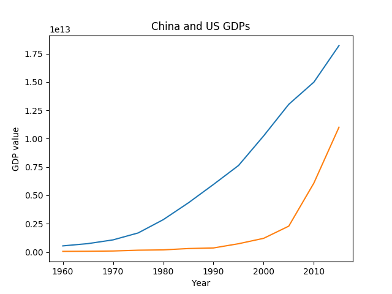
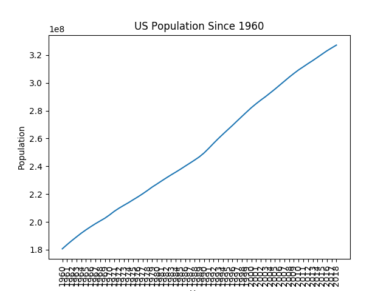

The following is a summary of the US and China's GDP statistics. It is broken down by the date, GDP value, and country. The graph plots the data in terms of the date on the x axis and GDP value on the Y axis.
I downloaded the GDP data from one of the JSON data sets that Professor Izbicki provided. The JSON files are lists with dictionaries inside of them. Then, I opened the JSON file using the with open function. Then, I made empty dictionaries for both the US and China GDP datasets. After that, I plotted the US data through the plt.plot function and did the same thing with the China data.Both of the GDPs are growing essentially exponentially because the two countries have the two largest GDP's in the world. They are also economic competitors.
Link is the USA data set and Link is where the China data set is from.
The following is a summary of the US population growth since 1960. It is broken down by the year and the population statistic of that time. It plots the year on the x axis and the population on the y axis.
I downloaded this data from the JSON data sets that Professor Izbicki provided. The JSON files are lists with dictionaries inside of them.Then, I opened the JSON file using the with open function. Then I made an empty dictionary for the US data set. I then plotted it using the plt.plot function.The US's population has been growing since 1960.
Link